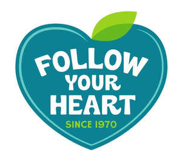

Trade Mark Journal No.2025/013 28 March 2025
UK00004162641 19 February 2025 (29,30)

- Class 29
- Milk and milk products; yogurt; cheese; dairy substitutes; milk substitutes; plant-based yogurt substitutes; plant-based non-dairy cheese substitutes; plant-based milk and milk products, namely milks derived from plants, vegetables, grains, nuts, seeds, beans and fruits; almond milk, cashew milk, coconut milk, hazelnut milk, nut milk, oat milk, peanut milk, rice milk, soy milk, all the aforementioned products being plain or flavored; cottage cheese; milk beverages, milk predominating; compotes; fruit-based snack foods; nut-based snack bars; seed-based snack bars; probiotic dairy-based snack bar; powdered milk; frozen, prepared, dried, preserved or packaged meals consisting primarily of meat, fish, poultry, ham, vegetables and game; yogurt-based snack foods; fruit purees, non-dairy creamers; creamers for beverages; butter; eggs; non-dairy dips, namely savory dips; non-dairy spread; plant-based sour cream.
- Class 30
- Cereals and preparations made from cereals; breakfast cereals; cereal bars; muesli; snack food, cereal-based; snack food, rice-based; biscuits; high-protein cereals bars; energy bars other than for dietary or medical purposes; cakes ; pastries ; sugar confectionery ; dessert mousses [confectionery]; pancakes ; waffles; coffee; tea; chocolate; cocoa-based beverages; chocolate-based beverages; coffee-based beverages; tea-based beverages; coffee substitutes; artificial coffee; custard; ice cream; sherbets [ices]; edible ices; fruit coulis [sauces]; chocolate-based spreads; chocolate spreads containing nuts; desserts made from plant-based ingredients; puddings; sauces [condiments]; non-dairy cheese sauce substitutes; imitation mayonnaise; vegan mayonnaise; mayonnaise-based sauces; salad dressings; food dressings [sauces]; mustard.
Danone US, LLC
Representative: Stobbs